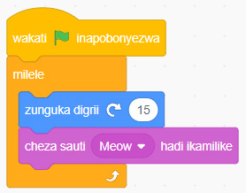
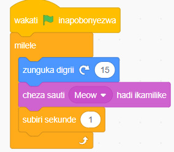

Unda programu itakayofanya kihusika kigeuke kwa nyuzi 15 kuelekea kulia huku kikitoa sauti milele.
Bofya bloku la Matukio kisha chagua bloku la wakati bendera ya kijani inapobonyezwa
Bofya bloku la Kidhibiti kisha chagua bloku la Milele.
Ongeza msimbo wa kugeuza kihusika nyuzi 15 kuelekea kulia huku ikitoa sauti ndani ya bloku la Milele. Ili kufanya hivyo, chagua zunguka digrii (15 ) kutoka kwenye bloku la Mwendo na anza sauti kutoka katika bloku la Sauti.
Bofya bendera ya kijani kuanzisha programu. Utaona kuwa kihusika kitazunguka kwa nyuzi 15 kuelekea kulia mfululizo huku sauti ikichezwa. Angalia au sikiliza maelezo ya Kielelezo namba 9 (a).
Ongeza bloku la subiri (1) sekunde ili kuona kihusika kikizunguka digrii 15 kulia. Angalia au sikiliza maelezo ya Kielelezo namba 9 (b).
Kielelezo namba tisa kinaonyesha kitanzi cha milele katika programu: (a) kihusika kikizunguka na kucheza sauti milele; na (b) programu hiyo ikiwa pia inasubiri sekunde moja katika kila mzunguko.


Kielelezo namba 9: Kitanzi cha milele katika programu
Kumbuka: Kitanzi cha milele kimeundwa kufanya kazi bila kikomo ilimradi programu itakua inaendelea kufanya kazi. Ili kukisitisha, lazima usimamishe programu mwenyewe kwa kubofya kitufe cha komesha, au kwa njia ya programu kwa kutumia bloku ya komesha kutoka kwenye bloku za Kidhibiti.